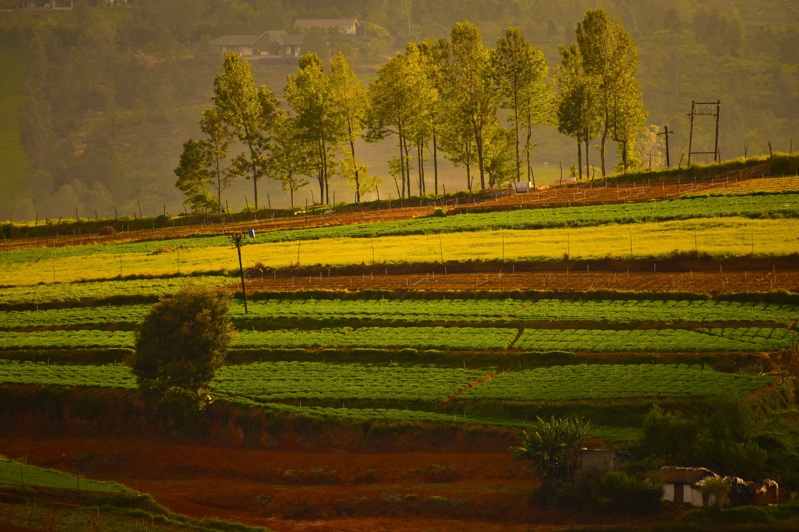

Photo: Ranjini Hemanth / UnsplashAccelerator Workshop · India 2026· 3/5
2
Experience converting locally available organic materials into high-quality biological compost.
Skills for monitoring compost and responding to changes in moisture, temperature, aeration, and biological activity.